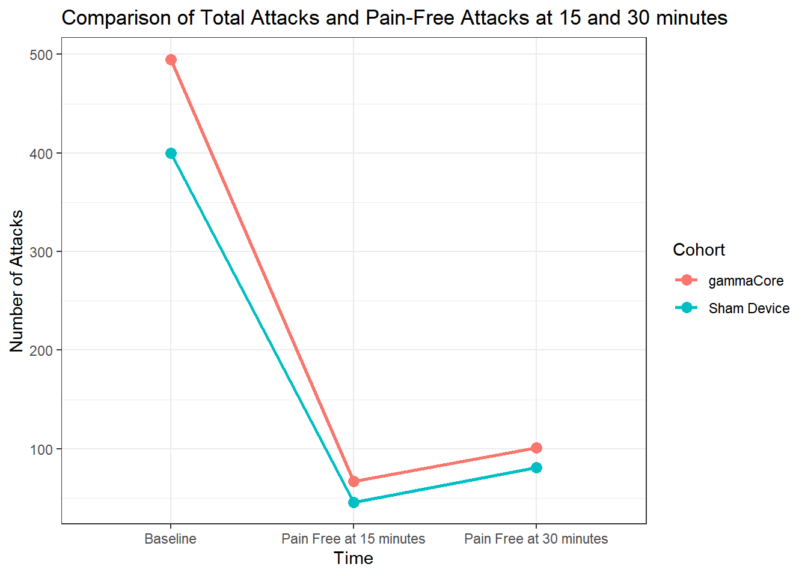
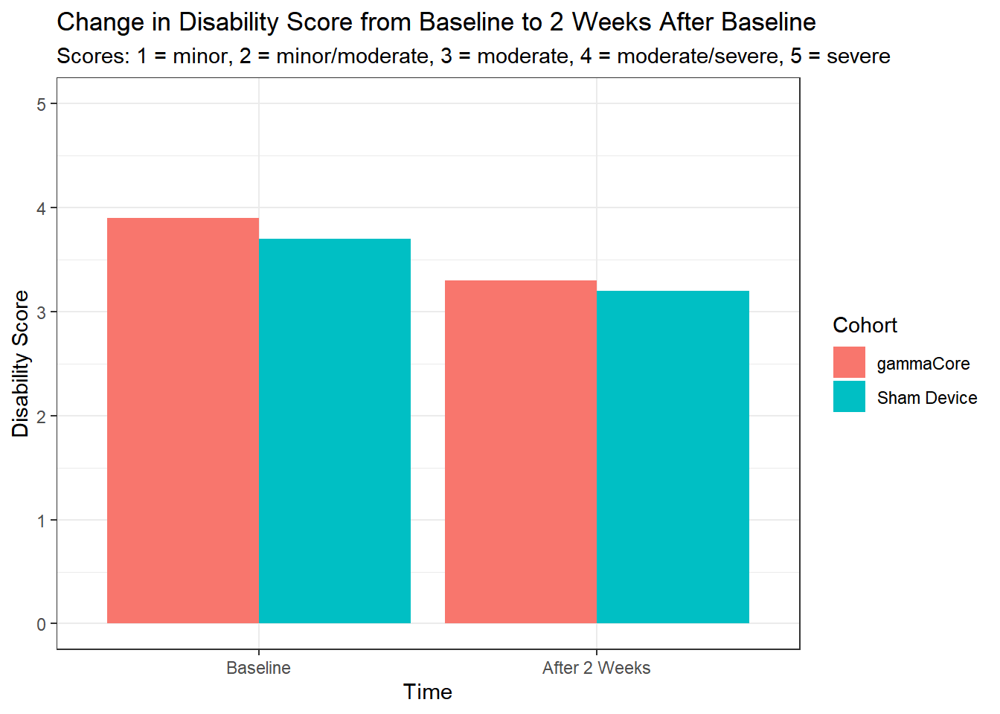
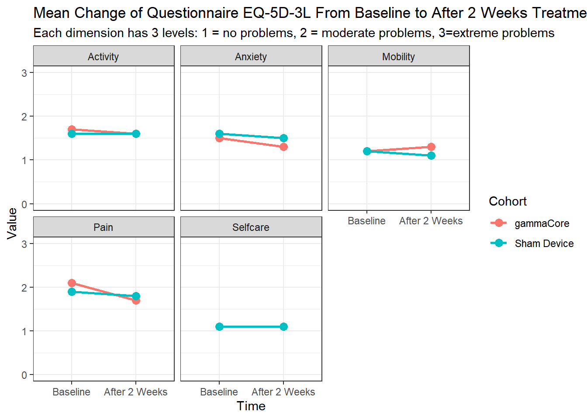
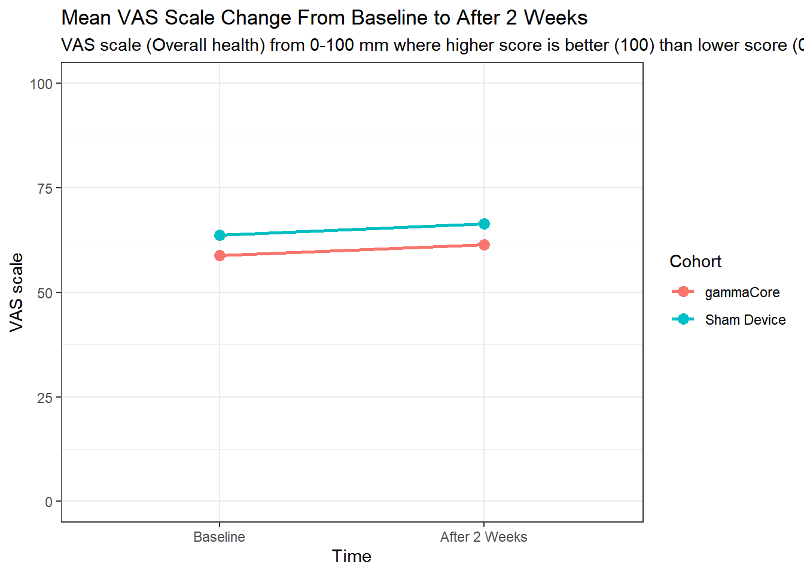
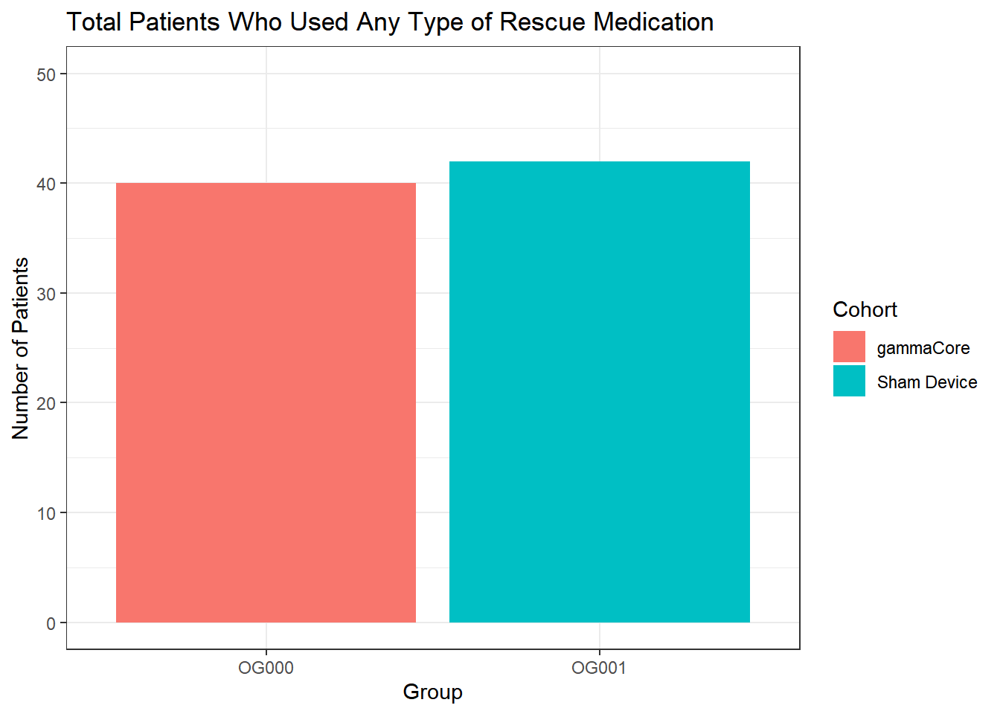

Warning: package 'shiny' was built under R version 4.5.2
Attaching package: 'shiny'
The following object is masked from 'package:jsonlite':
validate
library(bslib)
Attaching package: 'bslib'
The following object is masked from 'package:utils':
page
Acquiring the Data from the API
if (file.exists("json_response.json")) { json_response <-read_json("json_response.json")} else { uastring <-"R/python data science demos, youremail@email.com" request <-request("https://clinicaltrials.gov/api/v2/studies?query.cond=cluster+headache&aggFilters=results%3Awith%2Cstatus%3Acom" ) %>%req_perform() json_response <-resp_body_json(request)# saving json_response if it didn't exist in the first place jsonlite::write_json(json_response, "json_response.json")}
A Randomized Multicentre Study for the Acute Relief of Episodic and Chronic Cluster Headache.
A Randomized, Multicentre, Double-blind, Parallel, Sham-controlled Study of GammaCore®, a Non-invasive Neurostimulator Device for the Acute Relief of Episodic and Chronic Cluster Headache.
NCT00356603
STA106711
GlaxoSmithKline
INDUSTRY
Study Of Sumatriptan Succinate Injection Kit In Patients With Migraine or Cluster Headache In Japan
Imigran STATdose - Japan Clinical Experience Study for Self-injection
NCT02797951
16351
Eli Lilly and Company
INDUSTRY
A Study of LY2951742 (Galcanezumab) in Participants With Cluster Headache
A Phase 3b Multicenter, Single-Arm, Open-Label Safety Study of LY2951742 (Galcanezumab) in Patients With Episodic or Chronic Cluster Headache
NCT04066023
CP-2019-001
Zosano Pharma Corporation
INDUSTRY
Double-Blind Comparison of the Efficacy and Safety of C213 to Placebo for the Acute Treatment of Cluster Headaches
Randomized, Double-Blind, Multi-Center, Parallel-Group Comparison of the Efficacy and Safety of the C213 (Zolmitriptan Microneedle System) to Placebo for the Acute Treatment of Cluster Headaches
NCT02397473
15780
Eli Lilly and Company
INDUSTRY
A Study Of Galcanezumab In Participants With Episodic Cluster Headache
A Phase 3 Randomized, Double-Blind, Placebo-Controlled Study of LY2951742 in Patients With Episodic Cluster Headache
NCT01701245
GC-002
ElectroCore INC
INDUSTRY
Prevention and Acute Treatment of Chronic Cluster Headache Compared to Standard of Care
A Randomized, Multicenter Study for the Prevention and Acute Treatment of Chronic Cluster Headache Using Gammacore, Versus Standard of Care.
# A tibble: 2 × 3
group_id group_title group_description
<chr> <chr> <chr>
1 OG000 gammaCore Active Comparator: gammacore gammacore active device to …
2 OG001 Sham Device Placebo Comparator: inactive gammacore same as the activ…
`summarise()` has grouped output by 'type', 'title', 'group_number',
'description', 'population_description', 'reporting_status', 'param_type',
'unit_of_measure', 'time_frame', 'dispersion_type'. You can override using the
`.groups` argument.
Making a big dataframe of results
full_results <-class_table %>%left_join( group_table, by ="group_id" )
Comparison of the Headache Pain Free Attack Rates at 15 Minutes Following the Treatment
Headache pain was collected at the beginning of the attack (all treated attacks) and 15 minutes post treatment pain free attacks.
Data was collected in the patient diary. |ITT-Intention To Treat population |POSTED |NUMBER |Number of attacks |2 weeks |NA |Number of treated attacks |OG000 | 495.0| NA|gammaCore |Active Comparator: gammacore gammacore active device to be used noninvasively to the vagal nerve in the neck |Baseline |Number of Attacks Treated | |PRIMARY |Comparison of the Headache Pain Free Attack Rates at 15 Minutes Following the Treatment |Headache pain was collected at the beginning of the attack (all treated attacks) and 15 minutes post treatment pain free attacks.
Data was collected in the patient diary. |ITT-Intention To Treat population |POSTED |NUMBER |Number of attacks |2 weeks |NA |Number of treated attacks |OG001 | 400.0| NA|Sham Device |Placebo Comparator: inactive gammacore same as the active treatment, but without the therapy treatment provided |Baseline |Number of Attacks Treated | |PRIMARY |Comparison of the Headache Pain Free Attack Rates at 15 Minutes Following the Treatment |Headache pain was collected at the beginning of the attack (all treated attacks) and 15 minutes post treatment pain free attacks.
Data was collected in the patient diary. |ITT-Intention To Treat population |POSTED |NUMBER |Number of attacks |2 weeks |NA |Number of treated attack pain free at 15 minutes |OG000 | 67.0| NA|gammaCore |Active Comparator: gammacore gammacore active device to be used noninvasively to the vagal nerve in the neck |Pain Free at 15 minutes |Number of Attacks Treated | |PRIMARY |Comparison of the Headache Pain Free Attack Rates at 15 Minutes Following the Treatment |Headache pain was collected at the beginning of the attack (all treated attacks) and 15 minutes post treatment pain free attacks.
Data was collected in the patient diary. |ITT-Intention To Treat population |POSTED |NUMBER |Number of attacks |2 weeks |NA |Number of treated attack pain free at 15 minutes |OG001 | 46.0| NA|Sham Device |Placebo Comparator: inactive gammacore same as the active treatment, but without the therapy treatment provided |Pain Free at 15 minutes |Number of Attacks Treated | |SECONDARY |Change in Disability From Baseline (Randomization) to 2 Weeks After Baseline |Mean difference of scores on a 5 step disability scale. Disability was measured at baseline and after the randomization phase (2 weeks later). Lowest score is 1 and is better than the higher score at 5 that is the worst. An increase, higher scores, means worsening.
minor
minor/moderate
moderate
moderate/severe
severe |Safety population, three patients in the Sham device group have no data |POSTED |MEAN |units on a scale |2 weeks |Standard Error |Disability score at baseline |OG000 | 3.9| 0.2|gammaCore |Active Comparator: gammacore gammacore active device to be used noninvasively to the vagal nerve in the neck |Baseline |Disability score | |SECONDARY |Change in Disability From Baseline (Randomization) to 2 Weeks After Baseline |Mean difference of scores on a 5 step disability scale. Disability was measured at baseline and after the randomization phase (2 weeks later). Lowest score is 1 and is better than the higher score at 5 that is the worst. An increase, higher scores, means worsening.
minor
minor/moderate
moderate
moderate/severe
severe |Safety population, three patients in the Sham device group have no data |POSTED |MEAN |units on a scale |2 weeks |Standard Error |Disability score at baseline |OG001 | 3.7| 0.2|Sham Device |Placebo Comparator: inactive gammacore same as the active treatment, but without the therapy treatment provided |Baseline |Disability score |
Visualizations in R
full_results %>%filter(event =="Number of Attacks Treated") %>%ggplot(aes(x = time, y = value, group = group_title, color = group_title)) +# geom_bar(stat = "identity", position = position_dodge()) + geom_line(linewidth =1) +geom_point(size =3) +theme_bw() +labs(x ="Time",y ="Number of Attacks",title ="Comparison of Total Attacks and Pain-Free Attacks at 15 and 30 minutes",color ="Cohort" )

full_results %>%filter(title =='Change in Disability From Baseline (Randomization) to 2 Weeks After Baseline') %>%ggplot(aes(x = time, y = value, group = group_title, fill = group_title)) +geom_bar(stat ="identity", position =position_dodge()) +# geom_line(linewidth = 1) + # geom_point(size = 3) + theme_bw() +expand_limits(y =c(0,5)) +labs(x ="Time",y ="Disability Score",title ="Change in Disability Score from Baseline to 2 Weeks After Baseline",subtitle ="Scores: 1 = minor, 2 = minor/moderate, 3 = moderate, 4 = moderate/severe, 5 = severe",fill ="Cohort" )

full_results %>%filter(event =="Mobility"| event =="Selfcare"| event =="Activity"| event =="Pain"| event =="Anxiety") %>%ggplot(aes(x = time, y = value, group = group_title, color = group_title)) +# geom_bar(stat = "identity", position = position_dodge()) + geom_line(linewidth =1) +geom_point(size =3) +facet_wrap(~event) +theme_bw() +expand_limits(y =c(0,3)) +labs(x ="Time",y ="Value",title ="Mean Change of Questionnaire EQ-5D-3L From Baseline to After 2 Weeks Treatment",subtitle ="Each dimension has 3 levels: 1 = no problems, 2 = moderate problems, 3=extreme problems",color ="Cohort" )

full_results %>%filter(event =="VAS scale") %>%ggplot(aes(x = time, y = value, group = group_title, color = group_title)) +# geom_bar(stat = "identity", position = position_dodge()) + geom_line(linewidth =1) +geom_point(size =3) +theme_bw() +expand_limits(y =c(0,100)) +labs(x ="Time",y ="VAS scale",title ="Mean VAS Scale Change From Baseline to After 2 Weeks",subtitle ="VAS scale (Overall health) from 0-100 mm where higher score is better (100) than lower score (0).",color ="Cohort" )

full_results %>%filter(title =='Patients Who Used Any Type of Rescue Medication') %>%ggplot(aes(x = group_id, y = value, group = group_title, fill = group_title)) +geom_bar(stat ="identity", position =position_dodge()) +theme_bw() +expand_limits(y =c(0,50)) +labs(x ="Group",y ="Number of Patients",title ="Total Patients Who Used Any Type of Rescue Medication",fill ="Cohort" )

Saving first study results as a rds file for Shiny
dir.create("screencast-app")
Warning in dir.create("screencast-app"): 'screencast-app' already exists
dir.create("screencast-app/data")
Warning in dir.create("screencast-app/data"): 'screencast-app\data' already
exists